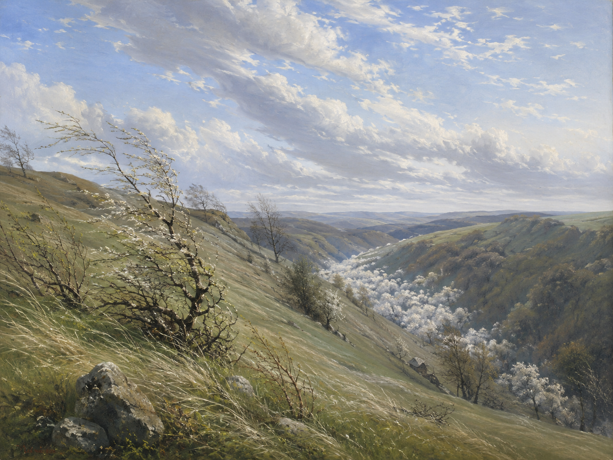

Die linden Lüfte sind erwacht,
lind（温和的、柔软的）是雅语，今日多用于 lindern（减轻）、Linderung（缓解）等派生词。die Lüfte 是 die Luft 的复数（诗歌中指"阵阵微风"，日常德语几乎只用单数）。erwachen（醒来）用 sein 作助动词，此处为现在完成时。
春天的信念
《诗集（最后手定版）》·「歌」辑·《春之歌》组诗第二首
浪漫主义（施瓦本诗派）
1812年作，1815年首次发表

图片由 AI 生成
Die linden Lüfte sind erwacht,
lind（温和的、柔软的）是雅语，今日多用于 lindern（减轻）、Linderung（缓解）等派生词。die Lüfte 是 die Luft 的复数（诗歌中指"阵阵微风"，日常德语几乎只用单数）。erwachen（醒来）用 sein 作助动词，此处为现在完成时。
Sie säuseln und weben Tag und Nacht,
säuseln 是拟声词，指风穿过树叶的沙沙低语。weben 在此并非"编织布匹"的字面义，而是德语中一个古老的、用于自然力的用法"活动、涌动"（参见歌德 "Weben" 一词在《浮士德》中的用法）。Tag und Nacht 是不带冠词的固定表达。
Sie schaffen an allen Enden.
`schaffen` 的两套变位在现在时同形，单凭 `Sie schaffen` 无法判别：弱变化（schaffte/geschafft）为「劳作、干活」，强变化（schuf/geschaffen）为「创造、运作」。乌兰德的施瓦本背景支持前者（劳作），但 `weben und schaffen` 是德语诗歌固定搭配（参《浮士德》地灵独白），亦支持后者。两种读法都有依据，本站不作定论。an allen Enden 是固定短语，意为「在各个角落、到处」。
O frischer Duft, o neuer Klang!
全诗唯一的纯感叹句，没有动词。两个感官（嗅觉 Duft、听觉 Klang）并置，把前三行的"活动"转成直接的感受。这也是全诗的节奏转折点：前三行是观察，后三行是对自己说话。
Nun, armes Herze, sei nicht bang!
Herze 是 Herz 带旧式词尾 -e 的呼语形式（第二节第11行则作 Herz，无 -e——这是为音节数所作的调整，参见语法要点）。sei 是 sein 的第二人称单数命令式（不规则）。bang（今多作 bange）意为"害怕的、忐忑的"。
Nun muß sich alles, alles wenden.
全诗的叠句（Refrain），两节末尾一字不差地重复。sich wenden 意为"转向、发生转变"。muß 在此不是外在的强制，而是表示说话者的确信（"必定会"）——德语情态动词的这种"推断用法"（epistemischer Gebrauch）值得留意。alles 的重复把陈述推向近乎恳求的语气。
Man weiß nicht, was noch werden mag,
was noch werden mag 中的 mag 是 mögen 的推测用法（"可能会"），不是"喜欢"。整句是全诗的核心：这份信念并不建立在已知之上，恰恰建立在"不知道"之上——不知道，所以还有可能。
Es blüht das fernste, tiefste Tal:
以形式主语 es 开头、真正主语 das Tal 后置。两个最高级 fernste / tiefste 并置而不加连词，是德语中加强语气的常见做法。"最远、最深的山谷"暗指连最偏僻、最阴暗之处也未被遗漏。
Nun, armes Herz, vergiß der Qual!
vergessen 在此支配第二格宾语（der Qual），是古典用法；现代德语用第四格（"vergiss die Qual"）。vergiß 为命令式旧拼法（今 vergiss）。与第一节相应位置的 "sei nicht bang"（不要害怕）相比，这里要求的更多：不是压住恐惧，而是放下痛苦。
| Infinitiv | Präsens 3. Sg. |
Präteritum | Perfekt | Partizip II | Konjunktiv II | Hilfsverb |
|---|---|---|---|---|---|---|
| erwachen | erwacht | erwachte | ist erwacht | erwacht | erwachte | sein |
| ↳ 表状态变化，用 sein；诗中现在完成时 "sind erwacht"。与及物的 wecken（唤醒）区分。 | ||||||
| schaffen（弱变化义：劳作） | schafft | schaffte | hat geschafft | geschafft | schaffte | haben |
| ↳ 另有强变化的同形动词 schaffen（创造）：schuf – hat geschaffen。两者变位不同、意义不同，须严格区分。 | ||||||
| werden | wird | wurde | ist geworden | geworden / worden | würde | sein |
| ↳ 诗中两处："Die Welt wird schöner"（变得更美，实义动词）与 "was noch werden mag"（会发生什么）。作被动或将来时的助动词时，第二分词用 worden。 | ||||||
| mögen | mag | mochte | hat gemocht | gemocht / mögen | möchte | haben |
| ↳ 诗中 "was noch werden mag" 取推测义（可能会），而非"喜欢"。 | ||||||
| vergessen | vergisst（旧 vergißt） | vergaß | hat vergessen | vergessen | vergäße | haben |
| ↳ 强变化，现在时单数变元音 e→i；诗中命令式旧拼法 vergiß（今 vergiss），并支配古典的第二格宾语。 | ||||||
| sich wenden | wendet sich | wendete / wandte sich | hat sich gewendet / gewandt | gewendet / gewandt | wendete sich | haben |
| ↳ 弱变化与混合变化（Rückumlaut）两套形式并存：表"翻转、掉头"多用 wendete，表"转向某人求助"多用 wandte。 | ||||||
| weben | webt | wob / webte | ist/hat gewoben / gewebt | gewoben / gewebt | wöbe / webte | sein（位移）/ haben |
| ↳ 强变化（比喻义：wob/gewoben）与弱变化（字面义：webte/gewebt）两套并存。诗中取比喻义。 | ||||||
Nun muß sich alles, alles wenden.
Nun, armes Herz, vergiß der Qual!
Nun, armes Herze, sei nicht bang! ／ Nun, armes Herz, vergiß der Qual!
Sie schaffen an allen Enden.
《春天的信念》作于1812年，是乌兰德《春之歌》组诗中的第二首（前后分别为《春之预感》与《春之静息》）。乌兰德是施瓦本诗派的核心人物，也是1848年法兰克福国民议会的议员——在德语文学史上，他既是最被广泛传唱的抒情诗人之一，又是一位坚定的自由派政治家。
这首诗只有十二行，语言简单到几乎没有生词，却是德语中最著名的春天诗。它之所以经得起反复阅读，在于它并不天真：第二节明确说"谁也不知道还会发生什么"（Man weiß nicht, was noch werden mag）——希望的根据不是对未来的把握，恰恰是对未来的无知。诗中被安慰的对象是"可怜的心"，说明说话者自己正处在需要安慰的位置；两节的要求也在递进，从"不要害怕"到"忘掉痛苦"。
舒伯特1820年为它谱曲（D 686），（据称1822年与1823年两度修订，待进一步核实），最终版本是德语艺术歌曲中最著名的曲目之一。此外还有据称约瑟夫·兰讷、马克斯·雷格、康拉丁·克罗伊策等多位作曲家（具体数目待进一步核实）的版本。诗的最后一行 "Nun muß sich alles, alles wenden" 在德语中已成为一句独立流传的成语式表达，常在困境中被引用。
中文译文为本站学习译文（AI 辅助），采用直译。两处需要说明：(1) 叠句 "Nun muß sich alles, alles wenden" 中的 muß 是情态动词的推断用法（"必定会"）而非义务（"必须"），译文作"必将转变"以传达这一确信语气，详见"语法要点"；(2) 第5行 Herze 与第11行 Herz 在德语中是同一个词的两种形式（为格律而变），中文无法体现这一差别，译文统一作"心"，请学习者参见逐行注释。已知此诗存在多个中文译本，因版权原因本站不转载具体译本全文。
【当前状态】德文正文由三个独立运营方互证：Zeno.org（一级来源，乌兰德“最后手定版”著作集第1卷）、gedichte7.de（三级来源，依 SOURCES.md 第 4 节仅作参考）、deutschelyrik.de（二级来源）。两节十二行，三方逐词逐标点比对完全一致，未发现异文。正字法保留旧拼法（muß、vergiß），现代形式（muss、vergiss）在词汇与变位表中给出。另：第5行 Herze 与第11行 Herz 交替为两来源共有，非讹误。
【沿革】初版以 Zeno.org 与 gedichte7.de 两来源核对；2026年8月来源独立性复核发现 gedichte7.de 属三级来源、扣除后独立来源不足，遂补入独立的二级来源 deutschelyrik.de；此后由三个运营方互证并含一个一级来源，符合规则 A–D。